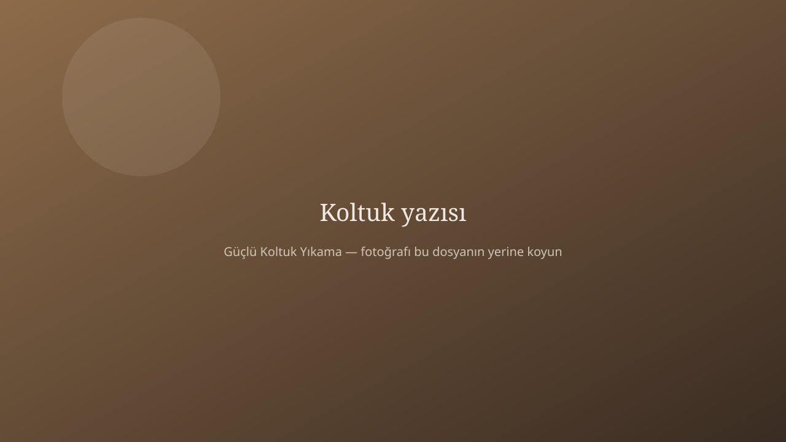

Koltuk neden ev süpürgesiyle gerçekten temizlenmez?
Süpürge, kumaşın üstündeki kırıntıyı alır. Güzel de olur — bir süreliğine. Ama koltuğun asıl yorgunluğu içeridedir: oturma izinin altındaki ter, yemek masasına bakan minderlerdeki yağ buharı, yastık arasına kaçan toz.
Ev tipi spreyler kokuyu değiştirir, kiri yerinden etmez. Yanlış ürünse rengi soldurur, kumaşı sertleştirir. Özellikle kadife ve nubuk, “elimde ne varsa” ile yıkanırsa iz bırakır. Profesyonel işin farkı makinenin gürültüsü değil; kumaşa göre yöntem seçilmesidir.
Biz evde ne yapıyoruz?
Önce vakum. Sonra lekeye bakılır: taze mi, işlemiş mi, yağlı mı, tanenli mi (çay-kahve). Ön işlem ona göre. Ardından buhar ve doğal şampuan, ölçülü nem, güçlü emiş. Amaç kumaşı boğmak değil; kirin çıkıp gitmesi.
Çocuklu ve evcil hayvanlı evlerde bu sıra daha da önemli. Yüzey parlak görünsün diye içeride kimyasal bırakmak, ertesi gün yere oturan çocuk için iyi bir fikir değil.